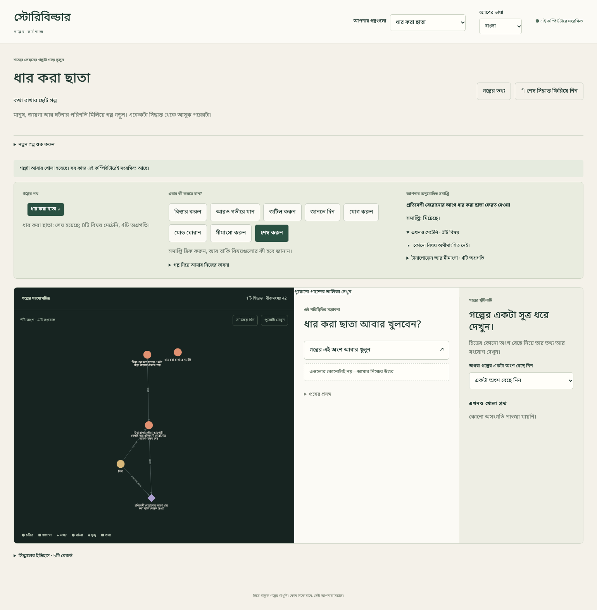
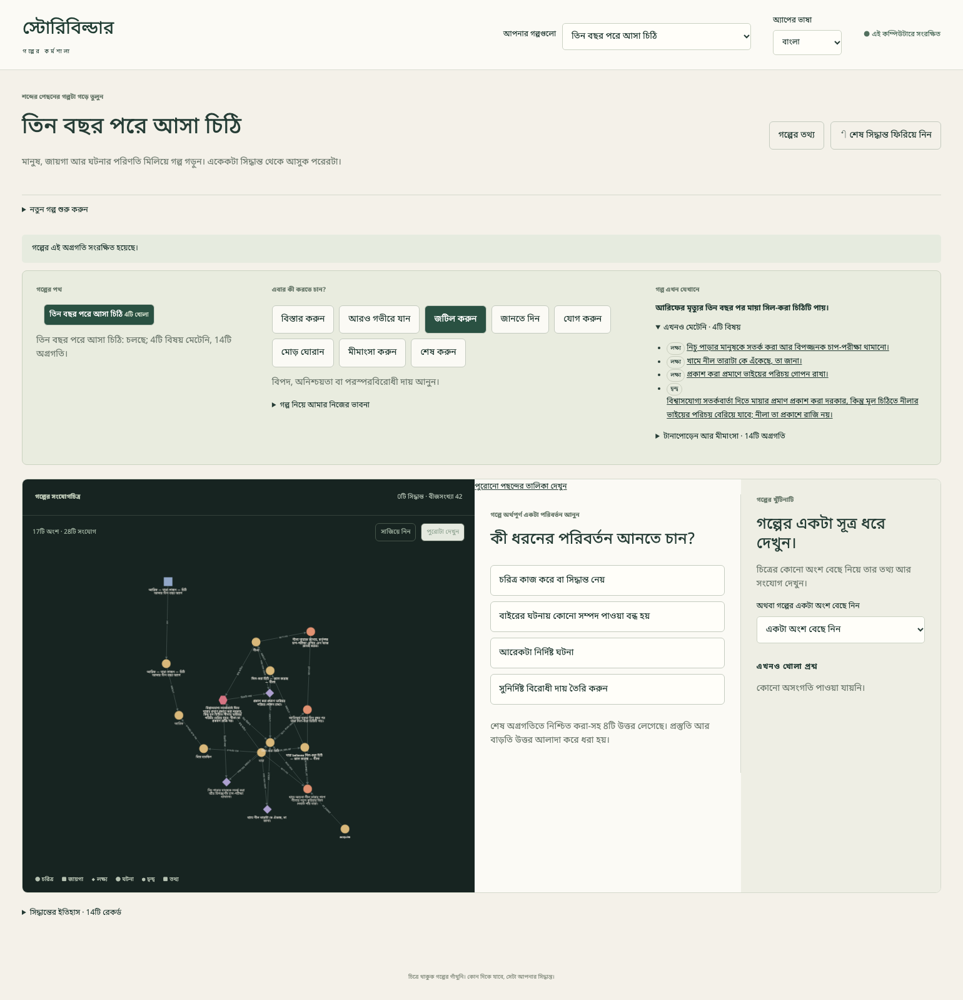
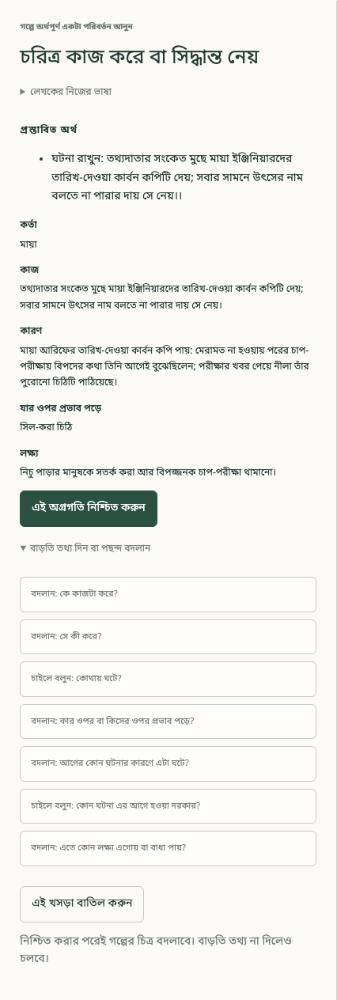
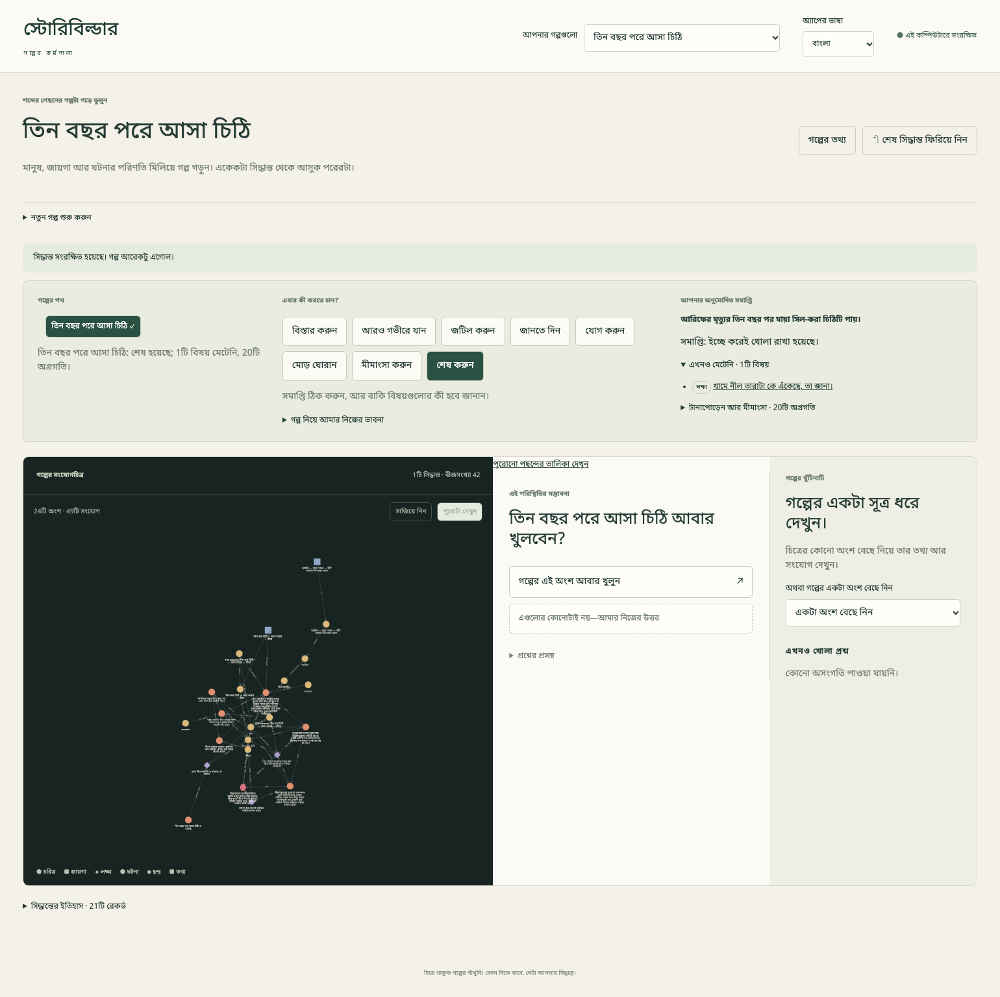
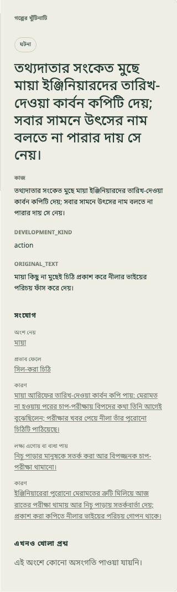

“স্টোরি স্টুডিওতে স্বাগতম”
ভাষা: English · বাংলা
একটা প্রতিশ্রুতি, একটা দৃশ্য, কিংবা মাথা থেকে সরাতে পারছেন না এমন প্রশ্ন—যেকোনো কিছু থেকেই গল্প শুরু হতে পারে। স্টোরি স্টুডিওতে আমরা এমন একটা কাজের জায়গা খুঁজছি, যেখানে সেই শুরুটা বড় করা যায়, অথচ গল্পের মালিক থাকেন আপনিই।
এই প্রকাশ্য বইয়ে আছে লেখকের জন্য আমরা যে অভিজ্ঞতা গড়ে তুলতে চাই, আর তার মধ্যে এখন কোনগুলো দেখানো যায়। স্টুডিও অ্যাপটি এখনও ব্যক্তিগত কম্পিউটারে চালানো, পরীক্ষামূলক একটি অ্যাপ। বই প্রকাশ হয়েছে মানেই অ্যাপ সবার জন্য ছাড়া হয়েছে, ডাউনলোড করা যায়, বা সহায়তার নিশ্চয়তা আছে—এমন নয়। অ্যাপের প্রকাশের তারিখও এখানে ঘোষণা করা হচ্ছে না।
কোনটা জরুরি, কোনটা গল্পের সত্যি, আর কোনটা খোলা থাকবে—সিদ্ধান্ত আপনার। ভাবনাটা এমন: আপনি কল্পনা করবেন, স্টুডিও সাজাতে সাহায্য করবে, কোনো ভাষামডেল গল্পটাকে গদ্যে ফুটিয়ে তুলতে পারে, তারপর কী রাখবেন সেটা আপনি ঠিক করবেন। ভালো চমক গল্পকে সমৃদ্ধ করতে পারে; গল্পের দখল নিতে পারে না।
কোনটা এখন আছে বুঝবেন কীভাবে
| চিহ্ন | এই বইয়ে তার মানে |
|---|---|
| এখন আছে (Available) | এখনও প্রকাশ না-করা পরীক্ষামূলক অ্যাপে যাচাই করা হয়েছে। সবার জন্য অ্যাপ পাওয়া যাচ্ছে—এটা বোঝায় না। |
| পরীক্ষামূলক নমুনা (Prototype) | পরীক্ষায় দেখানো হয়েছে; সীমাবদ্ধতা আর আলাদা সরঞ্জাম লাগলে তা বলা থাকবে। |
| পরিকল্পনায় (Envisioned) | ভবিষ্যতের ভাবনা বা নকশা; এখনকার কোনো বোতাম নয়। |
রূপরেখা মানে ভবিষ্যৎ অধ্যায়ের ধারণা, পুরো শেখার পাঠ নয়। কোনো সুবিধা আছে কি না, আর অধ্যায়টি সম্পূর্ণ কি না—এ দুটো আলাদা কথা।
প্রথম তিনটি অধ্যায় এই বইয়ের শুরুর ভিত্তি। কাজের জায়গা চিনে নিন, তারপর ছোট্ট গল্পের পাঠে সত্যিকারের বোতাম ব্যবহার করে শুরু থেকে অনুমোদিত সমাপ্তি পর্যন্ত যান। এবার বড় গল্পে কাজের পদ্ধতি আর মায়ার রহস্যগল্পের পাঠ দিয়ে আরও এগোতে পারেন। বাকি পরের অধ্যায়গুলো এখনও ছোট রূপরেখা।
এখন আছে: ইংরেজি ও বাংলা ইন্টারফেস, আর তৈরি হয়ে যাওয়ার পরেও গল্পের তথ্য বদলানোর সুবিধা। অ্যাপের ভাষা আর গল্পের ভাষা আলাদা। আপনার নিজের লেখা নিজে থেকে অনুবাদ হবে না।
পাঠ আর ছবিগুলো ৮ নভেম্বর ২০২৬ তারিখে ব্যক্তিগত সংস্করণে যাচাই করা হয়েছে। অ্যাপের ইংরেজি নাম এখনও Storybuilder · Narrative Workshop; বড় ভাবনাটার জন্য বইয়ে আমরা Story Studio নাম ব্যবহার করছি। ছবিগুলো নমুনা গল্প দিয়ে চালানো আসল অ্যাপের ছবি, বানানো নকশা নয়।
বই পড়তে ব্যক্তিগত অ্যাপ লাগবে না। কিন্তু হাতে-কলমে করতে হলে আলাদাভাবে পাওয়া ব্যক্তিগত সংস্করণে প্রবেশাধিকার দরকার। বই সেই প্রবেশাধিকার দেয় না।
“লেখকের কাজের জায়গা”
ভাষা: English · বাংলা
এখন আছে (Available) — যাচাই করা পরীক্ষামূলক সংস্করণের কাজের জায়গার পরিচয়।
লেখার আড়ালে গল্পটা ধরে রাখার জায়গা ভাবুন এটাকে: কে কী চায়, কী ঘটে, আর তার ফলে কী আসে। সংযোগচিত্রে সেই সম্পর্কগুলো দেখা যায়; সেটা পুরো গদ্য নয়।

প্রথম পাঠের পরে আসল কাজের জায়গা। ছোট লেখা দেখতে ছবিটা বড় করে খুলুন।

ওপরে আপনার গল্পগুলো থেকে সংরক্ষিত কাজ আবার খুলতে পারবেন। নতুন গল্প শুরু করুন আরেকটা গল্প তৈরি করে। নতুন গল্প ফাঁকা থাকে, যাতে মানুষ আর পরিস্থিতি আপনার ইচ্ছেমতো যোগ করতে পারেন।
অ্যাপের ভাষা থেকে English বা বাংলা বেছে নিলে বোতাম আর নির্দেশ বদলায়; আপনার গল্পের লেখা বদলায় না। গল্পের নামের পাশে গল্পের তথ্য খুলে নাম, উপশিরোনাম, সারাংশ, ধরন, গল্পের ভাষা আর লেখকের নোট বদলাতে পারেন। গল্পের ভাষা আর অ্যাপের ভাষা আলাদা পছন্দ।
অ্যাপের ভাষা বা গল্পের ভাষা যা-ই বেছে নিন, ইউনিকোডে লেখা যায় এমন যেকোনো ভাষায় লিখতে পারেন। কোনো লেখা নিজে থেকে অনুবাদ হয় না।
গল্পের পথ থেকে বুঝতে পারবেন, গল্প তৈরির কোন পর্যায়ে আছেন। পাশে বেছে নিন এবার কী করতে চান: বিস্তার করুন, আরও গভীরে যান, জটিল করুন, জানতে দিন, যোগ করুন, মোড় ঘোরান, মীমাংসা করুন, বা শেষ করুন। নিচের অংশে সেই ভাবনাটা প্রকাশ করার উপায় আসে। প্রস্তাব দেখানোর আগে দরকারি কোনো তথ্য জানতে চাইতে পারে।
প্রস্তাবের জায়গাটা আপনার দেখে নেওয়ার বিরতি। অর্থটা মেলে কি না পড়ুন, দরকারে পছন্দ বদলান, তারপরই নিশ্চিত করুন। নিশ্চিত করার পরে চিত্র বদলায়। ↶ শেষ সিদ্ধান্ত ফিরিয়ে নিন দিয়ে সবচেয়ে সাম্প্রতিক গ্রহণ করা সিদ্ধান্ত ফেরানো যায়; যেকোনো পুরোনো জায়গা ইচ্ছেমতো সম্পাদনার বোতাম এটি নয়।
বর্তমান অবস্থায় পরিস্থিতি আর এখনও না-মেটা বিষয় দেখা যায়। লক্ষ্য মেটানো আর গল্পের সমাপ্তি অনুমোদন আলাদা সিদ্ধান্ত। চাইলে সমাপ্তি খোলাও রাখতে পারেন; প্রথম পাঠে আমরা মিটে যাওয়া সমাপ্তি নেব।
পরিকল্পনায় (Envisioned) — বড় কাজের জায়গা। একই গল্প থেকে সময়রেখা দেখা, গাঁথুনি থেকে গদ্য চাওয়া, গদ্য সম্পাদনা আর নতুন প্রস্তাব পর্যালোচনার জায়গা আমাদের ভাবনায় আছে। যাচাই করা সংস্করণে এগুলো একসঙ্গে থাকা সুবিধা নয়। পরের রূপরেখাগুলো সম্ভাবনার কথা বলে, নেই এমন বোতাম খুঁজতে বলে না।
গল্পের গাঁথুনি এই কম্পিউটারে সংরক্ষিত হয়। ব্রাউজার বন্ধ করা আর সংরক্ষিত গল্প মুছে ফেলা এক কথা নয়। এই ব্যবস্থায় এখনও চূড়ান্ত গদ্যপাণ্ডুলিপি সংরক্ষণের আলাদা সুবিধা নেই।
“আপনার প্রথম ছোট্ট গল্প”
ভাষা: English · বাংলা
এখন আছে (Available) — ৮ নভেম্বর ২০২৬ তারিখে এখনও প্রকাশ না-করা পরীক্ষামূলক অ্যাপে পুরো পাঠ যাচাই করা হয়েছে।
বর্তমান পরীক্ষামূলক সংস্করণটি ব্রাউজারে খোলা থাকতে হবে। পাঠ শেষে পাবেন ছোট একটা গল্পের গাঁথুনি, নিজে থেকে তৈরি গদ্যপাণ্ডুলিপি নয়।
একটা কথা আর ছেঁড়া ছাতা
মিনা কথা দিয়েছে, প্রতিবেশী বেরোনোর আগেই ধার করা ছাতাটা ফেরত দেবে। পথে দেখে ছাতার একটা জায়গা ছেঁড়া। সে জায়গাটা সেলাই করে সময়মতো ছাতা ফিরিয়ে দেয়। কথাটা রাখা হয়।
মিনার একটা লক্ষ্য দেবেন, বাধাটা আনবেন, তার সঙ্গে মেরামতের ঘটনাটা যুক্ত করবেন, তারপর সমাপ্তি অনুমোদন করবেন। অনেক চরিত্র, বিস্তারিত জায়গা বা ঠিকঠাক তারিখ দেওয়ার দরকার নেই।
১. নতুন গল্প শুরু করুন
অ্যাপের ভাষা যদি এখনও English থাকে, তাহলে Interface language থেকে বাংলা বেছে নিন। আগে থেকেই বাংলা থাকলে কিছু বদলানোর দরকার নেই। বাংলায় এই পছন্দটির নাম অ্যাপের ভাষা।

এই পছন্দ ব্রাউজারে মনে থাকবে। এতে আপনার লেখা বা গল্পের ভাষা বদলাবে না।
নতুন গল্প শুরু করুন খুলুন। গল্পের নাম দিন ছাতার খসড়া। শুরুর বীজসংখ্যা যেমন আছে তেমন রেখে গল্প তৈরি করুন ↗ বেছে নিন।

এই পাঠে বীজসংখ্যা নিয়ে সৃজনশীল সিদ্ধান্ত লাগবে না।
ফাঁকা কাজের জায়গা খুলবে। গল্পের নামের পাশে গল্পের তথ্য বেছে নিন। গল্পের নাম বদলে ধার করা ছাতা দিন। চাইলে উপশিরোনাম, সারাংশ, ধরন আর লেখকের নোটও দিতে পারেন; বাধ্যতামূলক নয়। নমুনার উপশিরোনাম কথা রাখার ছোট গল্প।
গল্পের ভাষা থেকে বাংলা বেছে নিয়ে তথ্য সংরক্ষণ করুন চাপুন। নতুন গল্পের ভাষা এখন শুরুতে English থাকে, অ্যাপের ভাষা বাংলা হলেও। গল্পের ভাষা আলাদাভাবে বদলাতে পারেন।

নাম বদলালে নতুন গল্প তৈরি হয় না। তালিকা আর নাম আপডেট হয়। নিজের লেখা যেমন দেন তেমনই থাকে—নোটে English শব্দ থাকলেও।
আবার গল্পের তথ্য খুলে বা পাতা নতুন করে খুলে দেখে নিতে পারেন। চাইলে কাজের মাঝেও অ্যাপের ভাষা English করে আবার বাংলায় ফিরুন; এমনকি এখনও সংরক্ষণ না-করা লেখাও থাকবে। নিচের নির্দেশের জন্য বাংলায় ফিরুন। তারপর দিকের বোতামগুলো থেকে বিস্তার করুন বেছে নিন।
২. মিনাকে কিছু চাইতে দিন
লক্ষ্য বা প্রেরণা দিন বেছে নিন।
এটা কার লক্ষ্য? প্রশ্নে নতুন কাউকে বা কিছু যোগ করুন… নিন। তার নাম কী? ঘরে লিখুন মিনা, তারপর চালিয়ে যান।
পরের প্রশ্ন সে কী করতে চায়? এখানে লিখুন:
প্রতিবেশী বেরোনোর আগে ধার করা ছাতা ফেরত দেওয়া
আবার চালিয়ে যান। দরকারি প্রশ্ন বাকি থাকলে আগে সেগুলো আসে, তারপর প্রস্তাব দেখায়।

নিশ্চিত করার আগে অর্থটা দেখে নিন।
মিনা আর তার ইচ্ছা ঠিক আছে কি না দেখে এই অগ্রগতি নিশ্চিত করুন বেছে নিন। চিত্রে মিনা আর লক্ষ্য আসবে। বর্তমান অবস্থায় একটা না-মেটা লক্ষ্য দেখাবে।
৩. একটা বাধা আসুক
বিস্তার করুন রেখেই আরেকটা নির্দিষ্ট ঘটনা নিন। কী ঘটেছিল? ঘরে লিখুন:
মিনা ধার করা ছাতায় একটা ছেঁড়া জায়গা দেখতে পায়
চালিয়ে যান, ঘটনা পড়ুন, তারপর এই অগ্রগতি নিশ্চিত করুন। চিত্রে আবিষ্কারের ঘটনা আসবে। লক্ষ্য এখনও মেটেনি: ছেঁড়া দেখলেই তো কথা রাখা হয়ে যায় না।
এটাই এই সংস্করণের সাধারণ ঘটনা যোগ করার বোতাম। এই ছোট পাঠে দ্বিতীয় চরিত্র বা আলাদা বস্তু হিসেবে ছাতা তৈরি করা লাগবে না।
৪. এবার মিনা কথা রাখুক
মীমাংসা করুন, তারপর নির্দিষ্ট ঘটনার মাধ্যমে একটা বিষয় মেটান নিন।
এখানে একটা লক্ষ্যই বাকি, তাই প্রস্তাবে সেটা বেছে নেওয়া যেতে পারে। কী ঘটলে এটা মেটে? ঘরে লিখুন:
মিনা ছাতার ছেঁড়া জায়গাটা সেলাই করে প্রতিবেশী বেরোনোর আগে ফেরত দেয়
চালিয়ে যান। লক্ষ্য হিসেবে মিনার আগের ইচ্ছাটাই আছে কি না দেখুন।
বাড়তি তথ্য দিন বা পছন্দ বদলান খুলে চাইলে বলুন: কোন ঘটনা থেকে এই মীমাংসা আসে? নিন। মিনা ধার করা ছাতায় একটা ছেঁড়া জায়গা দেখতে পায় বেছে চালিয়ে যান চাপুন। প্রস্তাব পড়ার সময় বাড়তি তথ্যের তালিকা গুটিয়ে নিতে পারেন।

মেরামতে কথা রাখা হয়; যে আবিষ্কার থেকে কাজটা এল, তার সঙ্গেও যোগ থাকে। এই যোগ ঘটনার সম্পর্ক ধরে, নির্দিষ্ট ঘড়ির সময় দেয় না।
এই অগ্রগতি নিশ্চিত করুন নিন। না-মেটা বিষয়ের সংখ্যা এখন শূন্য হবে। অ্যাপ আপনার ঠিক করা ফল রেকর্ড করেছে; গদ্যের মান বিচার করেনি বা ঘড়ি মিলিয়ে শেষ সময় যাচাই করেনি।
৫. এবার গল্প শেষ হয়েছে ঠিক করুন
শেষ করুন নিন। সমাপ্তির জন্য কয়েকটি পছন্দ আসবে। সব বিষয় মিটিয়ে এই সমাপ্তি অনুমোদন করুন বেছে নিন।

দেখে নিন: আপনার অনুমোদিত সমাপ্তি, সমাপ্তি: মিটেছে।, আর এখনও মেটেনি · 0টি বিষয়। অনুমোদনের পর আবার অনুমোদন চাইবে না।
হয়ে গেল: মিনার একটা ইচ্ছা ছিল, বাধা এল, তার জন্য কাজ করল, আর আপনার অনুমোদিত সমাপ্তিতে পৌঁছাল। গাঁথুনি এই কম্পিউটারে সংরক্ষিত থাকে। আপনার গল্পগুলো থেকে আবার খুলতে পারবেন।
কোথাও ভুল হলে
প্রস্তাব ভুল বলছে: নিশ্চিত করার আগে বাড়তি তথ্য দিন বা পছন্দ বদলান খুলে দরকারি বদলান: প্রশ্নটি নিন, উত্তর দিন, আবার চালিয়ে যান। সঠিক প্রস্তাব পড়েই নিশ্চিত করুন।
তাড়াতাড়ি সমাপ্তি অনুমোদন করেছেন: ↶ শেষ সিদ্ধান্ত ফিরিয়ে নিন বেছে নিন। সবশেষ অনুমোদিত সমাপ্তি আবার খোলে, ইতিহাস থাকে। দেখে নিয়ে আবার অনুমোদন করতে পারেন। এটা সর্বশেষ সিদ্ধান্ত ফেরায়; যেকোনো পুরোনো অংশ সম্পাদনা করে না। এই দুই উদ্ধারপথ বর্তমান অ্যাপে ইংরেজি আর বাংলা—দুই ভাষাতেই চালিয়ে যাচাই করা হয়েছে।
একটু অন্যভাবে দেখুন
চাইলে নতুন সংস্করণে মিনা বেরোনোর আগেই ছেঁড়া দেখুক। ঘটনাটা বদলালে একই মেরামত কি এখনও স্বাভাবিকভাবে আসে? এটা সৃজনশীল চেষ্টা করার আমন্ত্রণ, আরেকটা যাচাই করা ধাপে-ধাপে পাঠ নয়। কোন বদলে গল্পের অর্থ বদলায়, আপনি ঠিক করবেন।
এবার একাধিক লক্ষ্য আর ইচ্ছে করে খোলা রাখা একটা প্রশ্ন নিয়ে কাজ করতে চাইলে বড় গল্পের পদ্ধতি আর মায়ার রহস্যগল্পের পাঠ-এ যেতে পারেন।
“চরিত্র, ইচ্ছা আর ঘটনা”
ভাষা: English · বাংলা
রূপরেখা — পুরো শেখার পাঠ নয়।
পরিকল্পনায় (Envisioned) থাকা অধ্যায়।
কারও ইচ্ছা কীভাবে ঘটনাকে অর্থ দেয়, আর বাধা এলে সে কী করতে পারে—এসব দেখব। ছাতার পাঠে চরিত্র, লক্ষ্য আর ঘটনা এসেছে; বড় পাঠ এখনও লেখা আর পরীক্ষা করা বাকি।
“সংযোগ আর পরিণতি”
ভাষা: English · বাংলা
রূপরেখা — পুরো শেখার পাঠ নয়।
পরিকল্পনায় (Envisioned) থাকা অধ্যায়।
একটার পরে আরেকটা ঘটনা ঘটা আর একটার কারণে আরেকটা ঘটা আলাদা। ছাতার পাঠে একটা কারণের যোগ আছে। পরে কোন পরিণতি ধরে রাখতে চান, সেটা দেখব।
“প্রশ্ন আর সৃজনশীল পছন্দ”
ভাষা: English · বাংলা
রূপরেখা — পুরো শেখার পাঠ নয়।
পরিকল্পনায় (Envisioned) থাকা অধ্যায়।
চাই এমন প্রশ্ন, যেগুলো গুরুত্বপূর্ণ, কিন্তু প্রতিটা সৃজনশীল পছন্দে থামিয়ে দেয় না। লেখক যেন প্রশ্নের উত্তর দিতে পারেন, চাইলে পরে ভাবতে পারেন, কিংবা প্রশ্নটাকেই অন্যভাবে দেখতে পারেন। গল্পের সত্যি কী হবে, সেই সিদ্ধান্ত লেখকেরই থাকবে। পুরো পাঠ এখনও তৈরি হয়নি।
“আরেকটু বড় গল্প”
ভাষা: English · বাংলা
এখন আছে (Available) — ৮ নভেম্বর ২০২৬ তারিখে মায়ার রহস্যগল্প দিয়ে কাজের পদ্ধতি যাচাই করা হয়েছে।
গল্প একটু বড় হলে একসঙ্গে কয়েকজনের ইচ্ছা মনে রাখতে হয়। পরের পাঠ তিন বছর পরে আসা চিঠি-তে মায়ার সামনে বাস্তব একটা বিপদ, নীলার বাধা দেওয়ার নিজের কারণ, আর ইচ্ছে করে না-মেটানো একটা প্রশ্ন থাকবে। অ্যাপকে কাহিনি বানাতে বলব না; এই বিষয়গুলো আমরা গড়ে তুলব।
তিন রকম ভাবনা আলাদা রাখুন
| কী বোঝাতে চান | এই পাঠে কোথায় রাখবেন |
|---|---|
| গল্পের জগতে সত্যিই যা ঘটেছে বা সত্যি | গল্পের বাস্তব তথ্য পরিসরে নির্দিষ্ট তথ্য, বা লেখকের ঠিক করা ঘটনা |
| কোনো চরিত্রের সন্দেহ | চরিত্রের বিশ্বাস পরিসরে বক্তব্য, সঙ্গে কার বিশ্বাস; সেটি ভুলও হতে পারে |
| এখনও বেছে নেননি এমন বিকল্প | লেখকের নোট, বা নিশ্চিত করার আগে বদলানো/বাতিল করা খসড়া |
| সমাপ্তিতে যে প্রশ্ন খোলা রাখবেন | স্পষ্ট করে রাখা না-মেটা লক্ষ্য; শুধু নোট লিখলে সেটি না-মেটা বিষয়ের তালিকায় আসে না |
যে ক্রমে গাঁথুনি তৈরি করছি, সেটা আমাদের কাজের ক্রম। দৃশ্যের তালিকা, পাঠক কখন কী জানবেন, বা নিজে থেকে বানানো গদ্যের রূপরেখা নয়। পাঠক যা জানে পরিসরেও আলাদা বক্তব্য রাখা হয়; সেটা প্রকাশের সময় সাজানোর পূর্ণ ব্যবস্থা নয়।
বারবার কাজে লাগবে যে পদ্ধতি
- বিস্তার করুন, জানতে দিন, জটিল করুন, যোগ করুন, মোড় ঘোরান বা মীমাংসা করুন-এর মতো একটি দিক নিন। তাতে কাজের পছন্দ আসে; আপনার লেখায় কতটা নাটক হলো, অ্যাপ তা বিচার করে না।
- বলা কাজটির বোতাম নিন। সামনে থাকা প্রশ্নের উত্তর দিয়ে চালিয়ে যান নিন। প্রস্তাবিত অর্থ না আসা পর্যন্ত দরকারি প্রশ্নের উত্তর দিন; বোতামটি চাপলেই সরাসরি প্রস্তাব আসবে, এমন নয়।
- তালিকার কোনো ঘর সরাসরি জানতে না চাইলে বাড়তি তথ্য দিন বা পছন্দ বদলান খুলুন। সেই প্রশ্নের আগে চাইলে বলুন: থাকলে তা নিন; আগে থেকে উত্তর থাকলে বদলান: নিন। লিখে বা বেছে চালিয়ে যান চাপুন। বাকি ঘরেও একইভাবে দিন। ঠিকভাবে আগেই বেছে দেওয়া থাকলে আবার উত্তর দিতে হবে না।
- আগে থাকা একজনকে বা একটি বিষয়কে তার নাম দিয়ে নিন। একাধিক মানুষ বা সম্পর্কিত বিষয় চাইলে তালিকার সব নির্দিষ্ট বিষয় বাছুন; আলাদা নাম নিতে macOS-এ Cmd, Windows/Linux-এ Ctrl ধরে নিতে পারেন। বক্তব্যের মান হিসেবে কোনো মানুষকে দিতে চাইলে তার বদলে আগে থাকা বিষয় বেছে নিন নিয়ে তাকে বাছুন। আগে থেকেই সেই তালিকা থাকলে সরাসরি বাছুন। সাধারণ লেখা চাইলে তার বদলে সরাসরি মান লিখুন নিন।
- কর্তা, কারণ আর লক্ষ্যসহ পুরো প্রস্তাব পড়ুন। আগে বেছে দেওয়া মানও যাচাইয়ের প্রস্তাব; কথায় অন্য কারও নাম থাকলে ভুল কর্তাও আসতে পারে। এই অগ্রগতি নিশ্চিত করুন নেওয়ার আগে তা বদলান। কারও নাম লেখায় থাকলেই ঠিক সম্পর্কটি চিত্রে তৈরি হবে না।
- আপনার সিদ্ধান্তের সঙ্গে অর্থ মিললেই নিশ্চিত করুন। তখন চিত্র বদলায়। ভাবনা বাদ দিতে এই খসড়া বাতিল করুন নিন। প্রস্তাব বদলাতে নিশ্চিত করার আগেই উত্তর বদলান; পরে সাধারণ সম্পাদকের মতো সব বদলাতে পারবেন ধরে নেবেন না।
পরের পাঠে দরকারি প্রতিটি মান দেওয়া আছে। আগের ধাপের উল্লেখ মানে সেই বিষয়টি বেছে নেওয়া; একই নামে নতুন করে বানানো নয়। তথ্য, বক্তব্য আর বিশ্বাসের নাম কাছাকাছি হলে তালিকায় তাদের ধরন দেখুন। বিশ্বাসের তথ্য দেখতে সত্যতা আর চলছে-এর মান পড়ুন; false থাকা আর বিশ্বাসের রেকর্ড না থাকা এক কথা নয়।
একটা ভাবনা প্রকাশে কত কাজ হচ্ছে দেখুন
যাচাই করা পাঠে ১৯টি অর্থপূর্ণ অগ্রগতি আর আলাদা সমাপ্তির অনুমোদন আছে। ওই ১৯টির জন্য অ্যাপ ইংরেজিতে ১৫৮টি, বাংলায় ১৫৬টি লেখকের সাড়া গুনেছে; দুটোতেই প্রতি অগ্রগতিতে মধ্যম সংখ্যা ৭। এর মধ্যে দিক ও কাজের পছন্দ, উত্তর, বাড়তি ঘর বাছা, সংশোধন আর নিশ্চিত করা আছে। এটা শুধু প্রশ্নের সংখ্যা বা লেখার সময়ের হিসাব নয়।
আগে প্রস্তাব বদলে দেখার অংশটিতে ইচ্ছে করেই একটু বাড়তি কাজ আছে। “পরিচয়ের সংকেত মুছে কপি দেওয়া” সিদ্ধান্তে বাদ দেওয়া খসড়াসহ ১৩টি সাড়া আর নথিভুক্ত ২০টি নিয়ন্ত্রণের কাজ লেগেছে। শেষ মীমাংসায় ইংরেজিতে ১১টি, বাংলায় ৯টি সাড়া: ইংরেজি বাক্য থেকে প্রথমে ভুল কর্তা এসেছিল, নিশ্চিত করার আগেই তা ঠিক করা হয়েছে। অর্থ ঠিক থাকল, কিন্তু বাড়তি কাজের মূল্য দেখা গেল।
নথিভুক্ত কাজের হিসাবে একবার লেখা দেওয়া বা একসঙ্গে কয়েকটি নাম বাছা এক কাজ; প্রতিটি অক্ষর বা মাউসের চাপ গোনা হয়নি। সিদ্ধান্ত ফিরিয়ে আবার করা, বাতিল করা কারণের চক্র, গল্পের তথ্য দেওয়া আর চিত্র দেখা মূল হিসাবের বাইরে আলাদা রাখা হয়েছে। একই লেখকের ঠিক করা গল্পের দুটো স্বয়ংক্রিয় মহড়া এটি; নতুন লেখকদের নিয়ে ব্যবহার-গবেষণা নয়।
গাঁথুনি বড় হলে কী হয় দেখুন
প্রথম ছয় অগ্রগতির পরে চিত্রে ৭টি বিষয়; দ্বন্দ্বের পরে ১৭টি; অনুমোদিত সমাপ্তিতে ২৪টি বিষয় আর ৪৯টি সংযোগ। কিছু বিষয় তথ্য আর বিশ্বাস বদলের রেকর্ড; প্রতিটি আলাদা কাহিনির ঘটনা নয়। বিষয় গুনেই গল্প সমৃদ্ধ হলো ধরে নেবেন না।

শেষে পুরো চিত্র একসঙ্গে ধরলে বড় নামগুলো আর আরামে পড়া যায় না। পুরোটা দেখুন অবস্থান বোঝাতে কাজে লাগে; বিস্তারিত পড়তে পাশের তথ্য আর সংযোগের বোতাম ভালো। সাজিয়ে নিন-এ বিষয়গুলোর জায়গা বদলাতে পারে; পর্দার অবস্থান গল্পের স্থায়ী ঠিকানা নয়। ছোট এই নমুনায় এটুকু অসুবিধা দেখা গেছে; স্তরভাগই একমাত্র সমাধান, তার প্রমাণ নয়। আগে থেকেই নির্দিষ্ট অংশ নিয়ে কাজের আলাদা সুবিধা আছে; এই পাঠে এক জায়গায় থেকে বর্তমান পুরো চিত্রটি দেখছি।
এবার সরাসরি অসম্ভব চিঠি-তে গিয়ে গাঁথুনি তৈরি করুন। মাঝের সময়ের অধ্যায়টি এখনও ভাবনার রূপরেখা; এই পাঠের পূর্বশর্ত বা এখন ব্যবহার করার সময়রেখা নয়।
“সময়, জানা আর প্রকাশ”
ভাষা: English · বাংলা
রূপরেখা — পুরো শেখার পাঠ নয়।
পরিকল্পনায় (Envisioned) থাকা অধ্যায়।
গল্পে কখন কী ঘটে, পাঠক কখন জানতে পারে, আর চরিত্র কী বিশ্বাস করে—এগুলো ইচ্ছে করেই আলাদা হতে পারে। আমরা যে সময়রেখার কথা ভাবছি, সেটি একই গল্পের একটা দৃশ্য হবে, আলাদা করে মিলিয়ে রাখার আরেকটা গল্প নয়। যাচাই করা সংস্করণে সময়রেখার নিয়ন্ত্রণ নেই।
“অসম্ভব চিঠি”
ভাষা: English · বাংলা
এখন আছে (Available) — ৮ নভেম্বর ২০২৬ তারিখে এখনও প্রকাশ না-করা পরীক্ষামূলক অ্যাপে পুরো পাঠ যাচাই করা হয়েছে।
তিন বছর পরে আসা চিঠি
আরিফের মৃত্যুর তিন বছর পর তাঁর স্ত্রী মায়া সিল-করা একটা চিঠি পায়। হাতের লেখা আরিফের মতো। বন্যার ফটকের পরের চাপ-পরীক্ষায় নিচু পাড়া ডুবে যাবে—চিঠিতে এই সতর্কবার্তা। কুরিয়ার নীলা যতটা বলছে, তার চেয়ে বেশি জানে। তার ভাই গোপনে রক্ষণাবেক্ষণের নথি দিয়েছিল; মূল চিঠি প্রকাশ করলে তার পরিচয় বেরিয়ে যেতে পারে।
এটা লেখকের কাজ শেখার পাঠ, তাই রহস্যের উত্তর আগেই বলছি। আমরা স্বাভাবিক একটা ব্যাখ্যা বেছে নেব; অ্যাপকে রহস্য সমাধান করতে বলব না। নতুন পরীক্ষার খবর পেয়ে নীলা আসল পুরোনো সতর্কবার্তাটি পাঠিয়েছে। তথ্যদাতার পরিচয় না খুলেও কাজে লাগে, এমন প্রমাণ মায়াকে খুঁজতে হবে। খামের অচেনা নীল তারাটা খোলা প্রশ্ন হয়ে থাকবে।
আগে ছোট্ট গল্পের পাঠ শেষ করুন, তারপর বড় গল্পে কাজের পদ্ধতি পড়ুন। এখানে তৈরি হবে সম্পর্ক ধরে রাখা গল্পের গাঁথুনি; গদ্য, দৃশ্যের ক্রম বা পাঠক কখন কী জানবেন, তার তালিকা নয়। নিচের সব কাজ বর্তমান বোতাম দিয়েই করা যায়; নতুন করে স্তর ভাগ বা দল সাজানোর সুবিধা লাগবে না।
প্রথম অগ্রগতির আগে
নতুন গল্প শুরু করুন থেকে নাম দিন তিন বছর পরে আসা চিঠি। অ্যাপ English থাকলে Interface language থেকে বাংলা নিন; বাংলায় এই পছন্দটির নাম অ্যাপের ভাষা। গল্পের তথ্য খুলে গল্পের ভাষা → বাংলা নিন। নতুন গল্পের ভাষা এখন শুরুতে English থাকে, অ্যাপ বাংলা হলেও। লেখকের নোট-এ লিখুন: “এটি গল্পের গাঁথুনি, গদ্য নয়। নীল তারার রহস্য ইচ্ছে করে খোলা থাকবে।” তথ্য সংরক্ষণ করুন।
নম্বরের ক্রমে এগোন। প্রতিটি অগ্রগতিতে কোন দিক আর কোন বোতাম নিতে হবে, বলা আছে। বড় গল্পে কাজের পদ্ধতি মেনে নিচে দেওয়া সব ঘর পূরণ করুন; কোনো কোনোটি আগেই বেছে দেওয়া থাকতে পারে। “৫ নম্বর ধাপ” মানে সেই ধাপের তৈরি বিষয়টি তালিকা থেকে নেবেন; কথাটা লিখবেন না, আবার নতুন করেও তৈরি করবেন না। কাছাকাছি নাম থাকলে তালিকায় চরিত্র, বক্তব্য, তথ্য বা বিশ্বাসের ধরন দেখে নিন। পরে একই বক্তব্য ব্যবহার করার সময় তার বিষয়, সম্পর্কের কথা আর অন্য ব্যক্তিকে একই রাখুন।
১. অসম্ভব আগমনটা তৈরি করুন
আরিফের মৃত্যু গল্পের সত্যি হিসেবে রাখছি। তাঁর মতো হাতের লেখা পাওয়া তদন্তের সূত্র; মৃত মানুষ গতকাল লিখেছেন, তার প্রমাণ নয়। মায়ার লক্ষ্য থাকায় সতর্কবার্তাটা তার নিজের শোকের বাইরেও মানুষের জীবনে জরুরি হয়ে ওঠে।
১. মায়াকে আনুন
বিস্তার করুন → মানুষ, জায়গা, বস্তু বা সম্পদ যোগ করুন নিন।
- কাকে বা কী যোগ করছেন? — চরিত্র
- কী দিয়ে তাকে চেনা যাবে? একটা নাম দিন। — মায়া
প্রস্তাবের অর্থ আর বেছে দেওয়া বিষয়গুলো দেখে এই অগ্রগতি নিশ্চিত করুন নিন।
২. আরিফকে মনে রাখুন
বিস্তার করুন → মানুষ, জায়গা, বস্তু বা সম্পদ যোগ করুন নিন।
- কাকে বা কী যোগ করছেন? — চরিত্র
- কী দিয়ে তাকে চেনা যাবে? একটা নাম দিন। — আরিফ
- কোন প্রসঙ্গটা মনে রাখা দরকার? — মায়ার স্বামী; চিঠি আসার তিন বছর আগে তিনি মারা গেছেন।
প্রস্তাবের অর্থ আর বেছে দেওয়া বিষয়গুলো দেখে এই অগ্রগতি নিশ্চিত করুন নিন।
৩. সতর্কবার্তাটা নির্দিষ্ট রাখুন
বিস্তার করুন → মানুষ, জায়গা, বস্তু বা সম্পদ যোগ করুন নিন।
- কাকে বা কী যোগ করছেন? — বস্তু
- কী দিয়ে তাকে চেনা যাবে? একটা নাম দিন। — সিল-করা চিঠি
- কোন প্রসঙ্গটা মনে রাখা দরকার? — আরিফের মতো হাতের লেখায় সতর্কবার্তা: বন্যার ফটকের পরের চাপ-পরীক্ষায় নিচু পাড়া ডুবে যাবে।
প্রস্তাবের অর্থ আর বেছে দেওয়া বিষয়গুলো দেখে এই অগ্রগতি নিশ্চিত করুন নিন।
৪. মৃত্যুটা সত্যি হিসেবে রাখুন
জানতে দিন → নির্দিষ্ট তথ্য বা বিশ্বাস যোগ করুন নিন।
- বক্তব্যটা কাকে বা কী নিয়ে? — আরিফ (২ নম্বর ধাপ)
- তার সম্পর্কে কী বলা হচ্ছে? — মারা গেছেন
- মান বা সম্পর্কিত বিষয় কী? — চিঠি আসার তিন বছর আগে
- কে এটাকে জানা কথা হিসেবে ধরতে পারে? — গল্পের বাস্তব তথ্য
প্রস্তাবের অর্থ আর বেছে দেওয়া বিষয়গুলো দেখে এই অগ্রগতি নিশ্চিত করুন নিন।
৫. চিঠি এসে পৌঁছাক
বিস্তার করুন → আরেকটা নির্দিষ্ট ঘটনা নিন।
- কী ঘটেছিল? — আরিফের মৃত্যুর তিন বছর পর মায়া সিল-করা চিঠিটি পায়।
- কে বা কী এটা শুরু করেছিল? — মায়া (১ নম্বর ধাপ)
- কার ওপর বা কিসের ওপর প্রভাব পড়ে? — সিল-করা চিঠি (৩ নম্বর ধাপ)
প্রস্তাবের অর্থ আর বেছে দেওয়া বিষয়গুলো দেখে এই অগ্রগতি নিশ্চিত করুন নিন।
৬. শোকের বাইরেও মায়ার একটা লক্ষ্য থাকুক
আরও গভীরে যান → লক্ষ্য বা প্রেরণা দিন নিন।
- এটা কার লক্ষ্য? — মায়া (১ নম্বর ধাপ)
- সে কী করতে চায়? — নিচু পাড়ার মানুষকে সতর্ক করা আর বিপজ্জনক চাপ-পরীক্ষা থামানো।
- লক্ষ্যটা কাকে বা কী নিয়ে? — সিল-করা চিঠি (৩ নম্বর ধাপ)
প্রস্তাবের অর্থ আর বেছে দেওয়া বিষয়গুলো দেখে এই অগ্রগতি নিশ্চিত করুন নিন।
দেখে নিন: চিত্রে সাতটি বিষয় আর একটি না-মেটা লক্ষ্য।
২. সন্দেহের একটা মূল্য থাকুক
কুরিয়ার সিল নীলার দিকে ইঙ্গিত করে, কিন্তু চিঠি জাল হওয়ার প্রমাণ নয়। মায়াকে এখানে ইচ্ছে করেই ভুল ধারণা দিচ্ছি। ভাইকে আড়াল করতে চাওয়া নীলার আলাদা ইচ্ছা; তাতে সে খলনায়ক হয়ে যায় না। নীল তারার প্রশ্নটা লক্ষ্য হিসেবে রাখব, যাতে সমাপ্তিতে সেটাকে খোলা রাখার সিদ্ধান্ত দেখা যায়।
৭. ভুল পথে নিতে পারে এমন সিল পাওয়া যাক
জানতে দিন → আরেকটা নির্দিষ্ট ঘটনা নিন।
- কী ঘটেছিল? — খামে অচেনা নীল তারার পাশে নীলার নতুন কুরিয়ার সিল দেখতে পায় মায়া।
- কে বা কী এটা শুরু করেছিল? — মায়া (১ নম্বর ধাপ)
- কার ওপর বা কিসের ওপর প্রভাব পড়ে? — সিল-করা চিঠি (৩ নম্বর ধাপ)
- আগের কোন ঘটনার কারণে এটা ঘটে? — আরিফের মৃত্যুর তিন বছর পর মায়া সিল-করা চিঠিটি পায়। (৫ নম্বর ধাপ)
প্রস্তাবের অর্থ আর বেছে দেওয়া বিষয়গুলো দেখে এই অগ্রগতি নিশ্চিত করুন নিন।
৮. যে প্রশ্ন খোলা রাখব, তাকে নাম দিন
আরও গভীরে যান → লক্ষ্য বা প্রেরণা দিন নিন।
- এটা কার লক্ষ্য? — মায়া (১ নম্বর ধাপ)
- সে কী করতে চায়? — খামে নীল তারাটা কে এঁকেছে, তা জানা।
- লক্ষ্যটা কাকে বা কী নিয়ে? — সিল-করা চিঠি (৩ নম্বর ধাপ)
প্রস্তাবের অর্থ আর বেছে দেওয়া বিষয়গুলো দেখে এই অগ্রগতি নিশ্চিত করুন নিন।
৯. নীলাকে আনুন
বিস্তার করুন → মানুষ, জায়গা, বস্তু বা সম্পদ যোগ করুন নিন।
- কাকে বা কী যোগ করছেন? — চরিত্র
- কী দিয়ে তাকে চেনা যাবে? একটা নাম দিন। — নীলা
- কোন প্রসঙ্গটা মনে রাখা দরকার? — একসময় আরিফের সঙ্গে কাজ করত এই কুরিয়ার; তার ভাই গোপনে রক্ষণাবেক্ষণের নথি দিয়েছিল।
প্রস্তাবের অর্থ আর বেছে দেওয়া বিষয়গুলো দেখে এই অগ্রগতি নিশ্চিত করুন নিন।
১০. মায়া আর আরিফের সম্পর্ক রাখুন
যোগ করুন → সম্পর্ক তৈরি করুন নিন।
- সম্পর্কটা কার দিক থেকে? — মায়া (১ নম্বর ধাপ)
- তাদের সম্পর্ক কেমন? — বিয়ে হয়েছিল
- সম্পর্কটা কার সঙ্গে? — আরিফ (২ নম্বর ধাপ)
প্রস্তাবের অর্থ আর বেছে দেওয়া বিষয়গুলো দেখে এই অগ্রগতি নিশ্চিত করুন নিন।
১১. নীলার নিজের লক্ষ্যও থাকুক
আরও গভীরে যান → লক্ষ্য বা প্রেরণা দিন নিন।
- এটা কার লক্ষ্য? — নীলা (৯ নম্বর ধাপ)
- সে কী করতে চায়? — প্রকাশ করা প্রমাণে ভাইয়ের পরিচয় গোপন রাখা।
- লক্ষ্যটা কাকে বা কী নিয়ে? — সিল-করা চিঠি (৩ নম্বর ধাপ)
প্রস্তাবের অর্থ আর বেছে দেওয়া বিষয়গুলো দেখে এই অগ্রগতি নিশ্চিত করুন নিন।
১২. মায়া চিঠি জাল হওয়ার সন্দেহ করুক
জানতে দিন → নির্দিষ্ট তথ্য বা বিশ্বাস যোগ করুন নিন।
- বক্তব্যটা কাকে বা কী নিয়ে? — সিল-করা চিঠি (৩ নম্বর ধাপ)
- তার সম্পর্কে কী বলা হচ্ছে? — জাল করেছে
- মান বা সম্পর্কিত বিষয় কী? — আগে থাকা বিষয়টি নিন: নীলা (৯ নম্বর ধাপ)
- কে এটাকে জানা কথা হিসেবে ধরতে পারে? — চরিত্রের বিশ্বাস
- কে এটা বিশ্বাস করে? — মায়া (১ নম্বর ধাপ)
- কোন ঘটনায় এটা প্রতিষ্ঠিত হয় বা জানা যায়? — খামে অচেনা নীল তারার পাশে নীলার নতুন কুরিয়ার সিল দেখতে পায় মায়া। (৭ নম্বর ধাপ)
প্রস্তাবের অর্থ আর বেছে দেওয়া বিষয়গুলো দেখে এই অগ্রগতি নিশ্চিত করুন নিন।
এতে একটি বক্তব্য, মায়ার সক্রিয় বিশ্বাস আর সিল দেখার ঘটনায় সেই ধারণা পাওয়ার রেকর্ড তৈরি হয়। চিঠি সত্যিই জাল—এমন সত্যি তৈরি হয় না।
৩. দ্বন্দ্বটা স্পষ্ট করুন
পরীক্ষা এগিয়ে আসায় তাড়া বাড়ে। কিন্তু শুধু তাড়া থাকলেই অ্যাপে দ্বন্দ্বের সম্পর্ক তৈরি হয় না। চিঠি প্রকাশ নিয়ে মতভেদের সঙ্গে দুজন মানুষ আর তাঁদের লক্ষ্য যুক্ত করুন। সতর্কবার্তা আর গোপনীয়তা—দুটোই জরুরি হতে পারে। আপনার গল্পে এই টানাপোড়েন বিশ্বাসযোগ্য লাগছে কি না ভাবুন।
১৩. পরীক্ষার সময় এগিয়ে আসুক
জটিল করুন → চরিত্র কাজ করে বা সিদ্ধান্ত নেয় নিন।
- কে কাজটা করে? — নীলা (৯ নম্বর ধাপ)
- সে কী করে? — নীলা মায়াকে জানায়, কর্তৃপক্ষ চাপ-পরীক্ষা এগিয়ে এনে আজ রাতেই করবে।
- কোন ঘটনা এর আগে হওয়া দরকার? — আরিফের মৃত্যুর তিন বছর পর মায়া সিল-করা চিঠিটি পায়। (৫ নম্বর ধাপ)
প্রস্তাবের অর্থ আর বেছে দেওয়া বিষয়গুলো দেখে এই অগ্রগতি নিশ্চিত করুন নিন।
১৪. মানুষ আর লক্ষ্য দিয়ে দ্বন্দ্বটা বাঁধুন
জটিল করুন → সুনির্দিষ্ট বিরোধী দায় তৈরি করুন নিন।
- দায়গুলো কেন একসঙ্গে রাখা যাচ্ছে না? — বিশ্বাসযোগ্য সতর্কবার্তা দিতে মায়ার প্রমাণ প্রকাশ করা দরকার, কিন্তু মূল চিঠিতে নীলার ভাইয়ের পরিচয় বেরিয়ে যাবে; নীলা তা প্রকাশে রাজি নয়।
- কারা জড়িত? — মায়া (১ নম্বর ধাপ); নীলা (৯ নম্বর ধাপ)
- কী নিয়ে বিরোধ? — সিল-করা চিঠি (৩ নম্বর ধাপ)
- কোন লক্ষ্যগুলো পরস্পরের বিরোধী? — নিচু পাড়ার মানুষকে সতর্ক করা আর বিপজ্জনক চাপ-পরীক্ষা থামানো। (৬ নম্বর ধাপ); প্রকাশ করা প্রমাণে ভাইয়ের পরিচয় গোপন রাখা। (১১ নম্বর ধাপ)
প্রস্তাবের অর্থ আর বেছে দেওয়া বিষয়গুলো দেখে এই অগ্রগতি নিশ্চিত করুন নিন।
দেখে নিন: দ্বন্দ্বে দুজন মানুষ আর দুটো লক্ষ্য যুক্ত আছে; নীল তারার লক্ষ্যটি আলাদা। পরীক্ষার সময় এগিয়ে আসা লেখকের দেওয়া তথ্য, অ্যাপের ক্যালেন্ডার হিসাব নয়।

৪. কোন প্রমাণ মানবেন আর দেবেন, তা ঠিক করুন
কার্বন কপিতে স্বাভাবিক একটা ব্যাখ্যা পাওয়া যায়: আরিফ পরের পরীক্ষার বিপদ বুঝেছিলেন, মৃত্যুর পর ভবিষ্যৎ দেখে তারিখ বলেননি। পরীক্ষার খবর পেয়ে নীলা তাঁর আসল পুরোনো চিঠি পাঠিয়েছে। চিঠি জাল নয়—এই সত্যি আর মায়ার ধারণা বদলানো আলাদাভাবে রাখুন। অ্যাপ নিজে থেকে তার মন বদলে দেবে না।
১৫. তারিখ-দেওয়া কার্বন কপি পাওয়া যাক
বিস্তার করুন → চরিত্র কাজ করে বা সিদ্ধান্ত নেয় নিন।
- কে কাজটা করে? — মায়া (১ নম্বর ধাপ)
- সে কী করে? — মায়া আরিফের তারিখ-দেওয়া কার্বন কপি পায়: মেরামত না হওয়ায় পরের চাপ-পরীক্ষায় বিপদের কথা তিনি আগেই বুঝেছিলেন; পরীক্ষার খবর পেয়ে নীলা তাঁর পুরোনো চিঠিটি পাঠিয়েছে।
- আগের কোন ঘটনার কারণে এটা ঘটে? — নীলা মায়াকে জানায়, কর্তৃপক্ষ চাপ-পরীক্ষা এগিয়ে এনে আজ রাতেই করবে। (১৩ নম্বর ধাপ)
- কার ওপর বা কিসের ওপর প্রভাব পড়ে? — সিল-করা চিঠি (৩ নম্বর ধাপ)
- এতে কোন লক্ষ্য এগোয় বা বাধা পায়? — নিচু পাড়ার মানুষকে সতর্ক করা আর বিপজ্জনক চাপ-পরীক্ষা থামানো। (৬ নম্বর ধাপ)
প্রস্তাবের অর্থ আর বেছে দেওয়া বিষয়গুলো দেখে এই অগ্রগতি নিশ্চিত করুন নিন।
১৬. চিঠি জাল নয়, সেই প্রমাণ রাখুন
জানতে দিন → নির্দিষ্ট তথ্য বা বিশ্বাস যোগ করুন নিন।
- বক্তব্যটা কাকে বা কী নিয়ে? — সিল-করা চিঠি (৩ নম্বর ধাপ)
- তার সম্পর্কে কী বলা হচ্ছে? — জাল করেছে
- মান বা সম্পর্কিত বিষয় কী? — আগে থাকা বিষয়টি নিন: নীলা (৯ নম্বর ধাপ)
- কে এটাকে জানা কথা হিসেবে ধরতে পারে? — গল্পের বাস্তব তথ্য
- বক্তব্যটা সত্যি বলে ধরা হচ্ছে, নাকি অস্বীকার করা হচ্ছে? — অস্বীকার করা
- কোন ঘটনায় এটা প্রতিষ্ঠিত হয় বা জানা যায়? — মায়া আরিফের তারিখ-দেওয়া কার্বন কপি পায়: মেরামত না হওয়ায় পরের চাপ-পরীক্ষায় বিপদের কথা তিনি আগেই বুঝেছিলেন; পরীক্ষার খবর পেয়ে নীলা তাঁর পুরোনো চিঠিটি পাঠিয়েছে। (১৫ নম্বর ধাপ)
প্রস্তাবের অর্থ আর বেছে দেওয়া বিষয়গুলো দেখে এই অগ্রগতি নিশ্চিত করুন নিন।
১২ নম্বর ধাপের একই চিঠি, একই সম্পর্কের কথা আর একই নীলাকে নিন। অস্বীকার করা মানে এখানে চিঠি জাল হওয়ার কথা অস্বীকার করা; আরিফের মৃত্যু নয়। পরের ধাপ না করা পর্যন্ত মায়ার আগের বিশ্বাস সক্রিয়ই থাকবে।
১৭. মায়ার ধারণা বদলাক
জানতে দিন → বিশ্বাস তৈরি করুন, সরান বা সংশোধন করুন নিন।
- বিশ্বাসটা কীভাবে বদলায়? — বিশ্বাস সংশোধন করা
- কার বিশ্বাস বদলায়? — মায়া (১ নম্বর ধাপ)
- গল্পের কোন ঘটনায় তা বদলায়? — মায়া আরিফের তারিখ-দেওয়া কার্বন কপি পায়: মেরামত না হওয়ায় পরের চাপ-পরীক্ষায় বিপদের কথা তিনি আগেই বুঝেছিলেন; পরীক্ষার খবর পেয়ে নীলা তাঁর পুরোনো চিঠিটি পাঠিয়েছে। (১৫ নম্বর ধাপ)
- কোন বক্তব্যটা নতুন বিশ্বাস হয় বা পুরোনোটার জায়গায় আসে? — বক্তব্য (১২ নম্বর ধাপ)
- আগের কোন বিশ্বাসটা সরবে বা সংশোধন হবে? — বিশ্বাস (১২ নম্বর ধাপ)
- নতুন বিশ্বাসটা সত্যি বলে ধরা হচ্ছে, নাকি অস্বীকার করা হচ্ছে? — অস্বীকার করা
প্রস্তাবের অর্থ আর বেছে দেওয়া বিষয়গুলো দেখে এই অগ্রগতি নিশ্চিত করুন নিন।
আগের বিশ্বাস নিষ্ক্রিয় হবে, কিন্তু রেকর্ড থাকবে। নতুন বিশ্বাস একই জাল করার বক্তব্য অস্বীকার করে। শুধু নাম দেখে দুটো কাছাকাছি লাগতে পারে; সত্যতা আর চলছে-এর মানও দেখুন।
১৮. মূল্য দিয়েও প্রমাণ ভাগ করুন
মোড় ঘোরান → চরিত্র কাজ করে বা সিদ্ধান্ত নেয় নিন।
নিশ্চিত করার আগেই বদলানোর চেষ্টা করুন। সে কী করে? ঘরে আগে নিচের খসড়াটি দিন, প্রস্তাব পর্যন্ত যান, তারপর নিশ্চিত করার আগে সেই ঘরের উত্তর বদলান:
মায়া কিছু না মুছেই চিঠি প্রকাশ করে নীলার ভাইয়ের পরিচয় ফাঁস করে দেয়।
এবার নিচের কাজটি দিয়ে বদলান। প্রথম লেখাটি বাদ দেওয়া বিকল্প; এই গল্পে ঘটে যাওয়া ঘটনা নয়।
- কে কাজটা করে? — মায়া (১ নম্বর ধাপ)
- সে কী করে? — তথ্যদাতার সংকেত মুছে মায়া ইঞ্জিনিয়ারদের তারিখ-দেওয়া কার্বন কপিটি দেয়; সবার সামনে উৎসের নাম বলতে না পারার দায় সে নেয়।
- আগের কোন ঘটনার কারণে এটা ঘটে? — মায়া আরিফের তারিখ-দেওয়া কার্বন কপি পায়: মেরামত না হওয়ায় পরের চাপ-পরীক্ষায় বিপদের কথা তিনি আগেই বুঝেছিলেন; পরীক্ষার খবর পেয়ে নীলা তাঁর পুরোনো চিঠিটি পাঠিয়েছে। (১৫ নম্বর ধাপ)
- কার ওপর বা কিসের ওপর প্রভাব পড়ে? — সিল-করা চিঠি (৩ নম্বর ধাপ)
- এতে কোন লক্ষ্য এগোয় বা বাধা পায়? — নিচু পাড়ার মানুষকে সতর্ক করা আর বিপজ্জনক চাপ-পরীক্ষা থামানো। (৬ নম্বর ধাপ)
প্রস্তাবের অর্থ আর বেছে দেওয়া বিষয়গুলো দেখে এই অগ্রগতি নিশ্চিত করুন নিন।

৫. বিপদ মেটান; একটা প্রশ্ন খোলা থাকুক
মায়ার দেওয়া কাজে লাগার মতো প্রমাণ দেখে ইঞ্জিনিয়ারেরা পরীক্ষা থামান। নিরাপত্তার লক্ষ্য, পরিচয় গোপন রাখার লক্ষ্য আর তাঁদের দ্বন্দ্ব—তিনটিই একসঙ্গে মিটেছে বলে রাখব। এটা আমাদের বেছে নেওয়া ফল; অ্যাপ ইঞ্জিনিয়ারিংয়ের প্রমাণ পরীক্ষা করে না, সমঝোতাটা বিশ্বাসযোগ্য কি না-ও বিচার করে না। নীল তারার রহস্য ইচ্ছে করেই খোলা থাকছে।
১৯. পরীক্ষা থামুক, তথ্যদাতা আড়ালে থাকুক
মীমাংসা করুন → নির্দিষ্ট ঘটনার মাধ্যমে একটা বিষয় মেটান নিন।
- কোন বিষয়টার মীমাংসা হচ্ছে? — নিচু পাড়ার মানুষকে সতর্ক করা আর বিপজ্জনক চাপ-পরীক্ষা থামানো। (৬ নম্বর ধাপ)
- কী ঘটলে এটা মেটে? — ইঞ্জিনিয়ারেরা পুরোনো মেরামতের ত্রুটি মিলিয়ে আজ রাতের পরীক্ষা থামায় আর নিচু পাড়ায় সতর্কবার্তা দেয়; প্রকাশ করা কপিতে নীলার ভাইয়ের পরিচয় গোপন থাকে।
- কে এটা ঘটায়? — মায়া (১ নম্বর ধাপ)
- কোন ঘটনা থেকে এই মীমাংসা আসে? — তথ্যদাতার সংকেত মুছে মায়া ইঞ্জিনিয়ারদের তারিখ-দেওয়া কার্বন কপিটি দেয়; সবার সামনে উৎসের নাম বলতে না পারার দায় সে নেয়। (১৮ নম্বর ধাপ)
- একই ঘটনায় আর কোন সম্পর্কিত বিষয়গুলো মেটে? — প্রকাশ করা প্রমাণে ভাইয়ের পরিচয় গোপন রাখা। (১১ নম্বর ধাপ); বিশ্বাসযোগ্য সতর্কবার্তা দিতে মায়ার প্রমাণ প্রকাশ করা দরকার, কিন্তু মূল চিঠিতে নীলার ভাইয়ের পরিচয় বেরিয়ে যাবে; নীলা তা প্রকাশে রাজি নয়। (১৪ নম্বর ধাপ)
প্রস্তাবের অর্থ আর বেছে দেওয়া বিষয়গুলো দেখে এই অগ্রগতি নিশ্চিত করুন নিন।
একটা প্রশ্ন খোলা রেখেই সমাপ্তি অনুমোদন করুন
এখন একটি বিষয় না-মেটা থাকার কথা: খামে নীল তারাটা কে এঁকেছে, তা জানা। অন্য লক্ষ্য আর দ্বন্দ্ব মিটেছে। শেষ করুন, তারপর ইচ্ছে করে খোলা সমাপ্তি রাখুন; তালিকার বিষয়গুলো অমীমাংসিত থাকুক নিন। লক্ষ্যটি খোলা থাকলে সব মিটেছে এমন সমাপ্তির পছন্দ পাওয়া যাবে না।
দেখে নিন: আপনার অনুমোদিত সমাপ্তি, সমাপ্তি: ইচ্ছে করেই খোলা রাখা হয়েছে।, আর একটি না-মেটা বিষয়। বিপদের মূল গল্প শেষ হলো; প্রেরককে নিয়ে প্রশ্নটা আমরা মেনেই রাখলাম। এতে অন্য গল্পে নিয়ে যাওয়ার হুক বা শেষ করা গদ্য তৈরি হয় না।

ইতিহাস না মুছে সিদ্ধান্ত ফেরান
সমাপ্তি অনুমোদনের আগে, ১৯ নম্বর ধাপের পরপরই ↶ শেষ সিদ্ধান্ত ফিরিয়ে নিন দিয়ে দেখতে পারেন। মীমাংসাটি সরে যাবে; নিরাপত্তার লক্ষ্য, পরিচয় গোপন রাখার লক্ষ্য, দ্বন্দ্ব আর নীল তারার লক্ষ্য—চারটি বিষয় আবার না-মেটা হবে। ফিরিয়ে নেওয়া সিদ্ধান্তের রেকর্ড থাকবে। আগের পছন্দগুলো দিয়ে ১৯ নম্বর ধাপ আবার করুন, তারপর খোলা সমাপ্তি অনুমোদন করুন। এই উদ্ধারপথ চালিয়ে দেখা হয়েছে। আবার করার আলাদা বোতাম বা যেকোনো পুরোনো বিষয় বদলানোর সাধারণ সম্পাদক নেই; Undo-কে তা ধরে নেবেন না।
দূরের একটা যোগ ধরে এগোন
সমাপ্তির পর অথবা গল্পের একটা অংশ বেছে নিন থেকে ১৮ নম্বর ধাপে তথ্যদাতার সংকেত মুছে প্রমাণ দেওয়ার সিদ্ধান্তটি নিন। পাশের তথ্যের জায়গায় ১৫ নম্বর ধাপের কার্বন কপি পাওয়ার ঘটনার সংযোগে চাপুন। কারণ সম্পর্ক ধরে সেই আবিষ্কারে ফিরবেন, যেটিতে সিদ্ধান্তের পথ খুলেছিল। পাশের তালিকায় সম্পর্কের নাম আর অন্য বিষয়টি আছে, কিন্তু কোন দিকে সম্পর্ক যাচ্ছে তা আলাদা করে লেখা নেই। দিক মিলিয়ে নিতে চিত্রের তির বা ১৫ ও ১৮ নম্বর ধাপে বেছে দেওয়া বিষয়গুলো দেখুন। সিল দেখা আর চিঠি পাওয়া অন্য সূত্র; আগে ঘটেছে বলেই প্রতিটি ঘটনা পরের প্রতিটি ঘটনার কারণ নয়।

পাশের তথ্যে original_text-ও থাকে, যেখানে ১৮ নম্বর ধাপের বাদ দেওয়া প্রথম খসড়াটি আছে। এটা কোথা থেকে লেখাটি এল তার রেকর্ড, আরেকটা ঘটে যাওয়া ঘটনা নয়। নিশ্চিত করা নাম আর কাজ-এর ঘরে সংকেত মুছে কপি দেওয়ার সিদ্ধান্তটি আছে।
একটি বিষয় বেছে নিলে তালিকাটি আর দেখা যায় না। সংযোগের বোতাম ধরে বা চিত্রের বিষয়ে চাপ দিয়ে এগোতে পারেন; পাতা আবার খুললে বাছাই সরে গিয়ে তালিকা ফিরে আসে। পুরোটা দেখুন দিয়ে সব দেখুন; পুরো কথা পড়তে বড় করে দেখুন বা পাশের তথ্য পড়ুন। সাজিয়ে নিন গল্পের সত্যি বদলায় না, শুধু চিত্র সাজায়। সংরক্ষিত গল্প আবার খুললে চিত্র আর অনুমোদিত সমাপ্তি থাকে।
লেখকের অন্য সিদ্ধান্ত চেষ্টা করুন
মায়া যদি তথ্যদাতাকে আড়াল করতে না চাইত? নীলা যদি মূল চিঠির বদলে কপি পাঠাত? এগুলো নতুন সংস্করণের সম্ভাবনা; যাচাই করা এই সংস্করণের ঘটনা নয়। আলাদা গল্পে চেষ্টা করুন, যাতে পুরোনো গৃহীত সিদ্ধান্ত পাল্টানোর দরকার না হয়। নীল তারার প্রেরক জেনে গেলে পুরো মিটে যাওয়া সমাপ্তি চাইবার আগে লক্ষ্যটিও স্পষ্ট করে মেটান। ব্যাখ্যাটা তৃপ্তি দিল কি না, আপনি ঠিক করবেন; অ্যাপ আপনার অনুমোদিত বিষয়গুলো ধরে রাখে।
“গল্পের গাঁথুনি থেকে গদ্য”
ভাষা: English · বাংলা
রূপরেখা — পুরো শেখার পাঠ নয়।
পরিকল্পনায় (Envisioned) থাকা অধ্যায়।
ভাবনার পথটা হলো অনুমোদিত গাঁথুনি, সৃজনশীল গদ্য, ভালো-মন্দ নতুন প্রস্তাব দেখা, তারপর সংশোধন। গদ্যে সুন্দর কোনো নতুন কথা এলেই সেটা যেন লেখকের অনুমতি ছাড়া গল্পের সত্যি হয়ে না যায়। এখনও প্রকাশ না-করা পরীক্ষামূলক অ্যাপে গাঁথুনি বের করা, ভাষামডেলের গদ্য, গদ্য সম্পাদনা, নতুন প্রস্তাব পর্যালোচনা আর চূড়ান্ত গদ্য সংরক্ষণ একসঙ্গে নেই। এটা রূপরেখা, এখন ব্যবহার করার বোতামের তালিকা নয়।
“আপনার নিজের গল্প”
ভাষা: English · বাংলা
রূপরেখা — পুরো শেখার পাঠ নয়।
পরিকল্পনায় (Envisioned) থাকা অধ্যায়।
শেষ পর্যন্ত গল্পটা শুরু হবে আপনার নিজের ভাবনা থেকে। গঠন কল্পনাকে সাহায্য করুক। এমন যেন না হয় যে গল্প লিখতে গিয়ে আপনাকে প্রম্পট ইঞ্জিনিয়ারিং শিখতে হচ্ছে। ভবিষ্যতের পাঠে কী স্থির থাকবে আর কোথায় চমক আসতে পারে দেখব। পুরো গদ্যযাত্রা এখনও পরিকল্পনায়, এখানে দেখানো হয়নি।